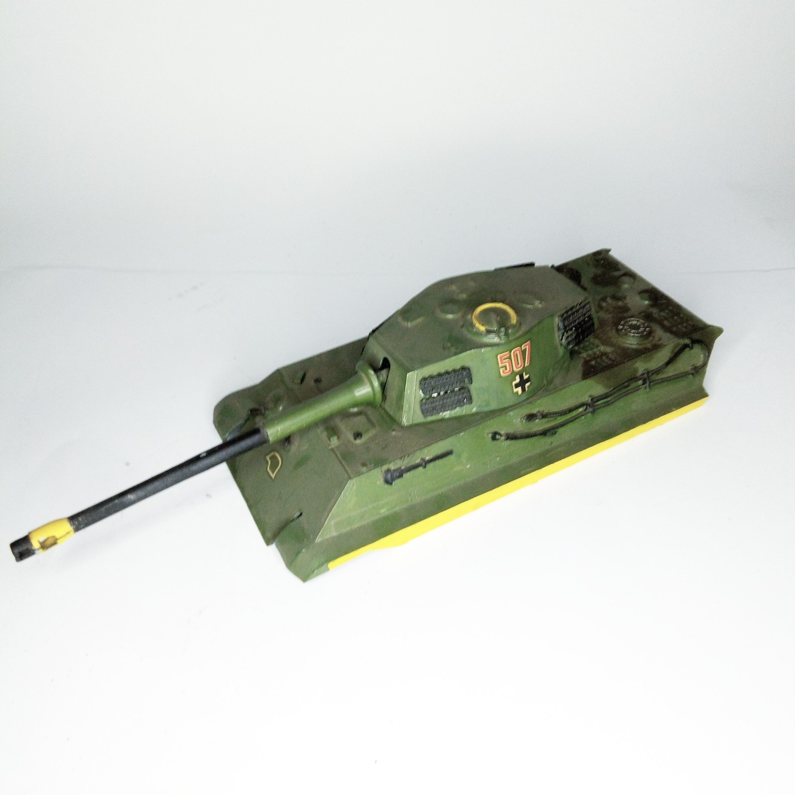

Mezzi militari · scale model archive
Tiger II tank
Tiger II tank — Kit: ....., Scale: 1/35. This was a motorired japanese tank kit bought long time ago, I will research for further details

Photo gallery
English description
This was a motorired japanese tank kit bought long time ago, I will research for further details
Descrizione italiana
Questo fu una motorired giapponese autoro kit comprato long time ago, I will research per further details.